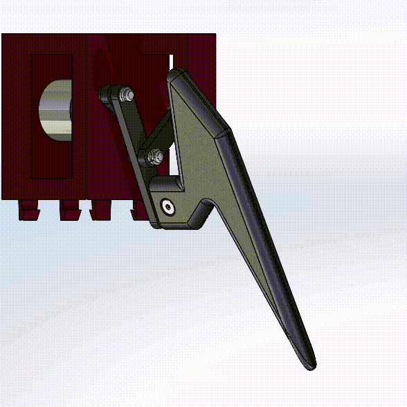
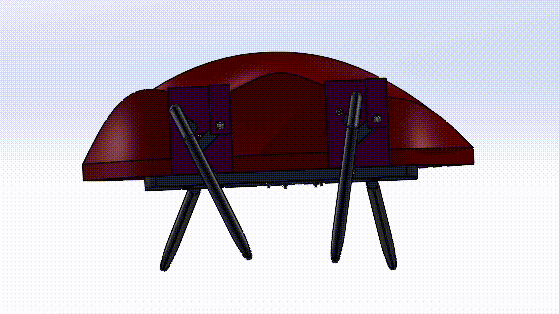

As part of my CAD course, we were tasked with designing a dynamic system and animating it. I am quite interested in
robotics and want to eventually be able to make a robot myself. As such I chose to make a concept design of a quadruaped
(4-legged) robot. However, unlike the traditional quadruped robots that use 3 motors/joints per leg, I wanted to see if
there was a way to simplify it.
Design Parameters
There were a few design parameters that were set for this project. These are as follows:
Needs to have at least 6 unique parts
Needs to be animated and show the motion of the object
Minimize the amount of motors required for motion
Should be 3D printable, in case I want to build it in the future
Note that the first two parameters were from the course's project outline, while the other 2 were self-imposed.
Solution
This design concept will be simple 4-legged robot, that can be controlled using an Arduino microcontroller. The legs are
driven by motors connected to a four-bar linkage known as the Chebyshev lambda linkage. The special property
of this linkage is that it can take rotational motion and convert it into an approximate straight-line motion. A tracing of
the linkage's movement is shown in the figure below. This property is perfect for this usecase as it simplifies the leg from
a 3 motor/joint design to a single motor design. This is significant financially, as it reduces the total number of motors
required from 12 to 4.
Retrieved from https://demonstrations.wolfram.com/ChebyshevsLambdaMechanism/
The linkage was adapted and then applied to this concept design, along with additional parts to form the leg.
The leg design is shown below.

With the leg designed, the rest of the body can be designed around the leg sub-assembly.This quadruped robot design took
inspiration from insects for the aesthetics of the robot. As well, care was given to ensure that parts were designed in such
a way to allow for easy 3D printing. This was done by designing in a manner which avoided support material if possible,
and by adding in tolerances to account for shrinkage during the printing process.
Results and Next Steps
Through the use of SolidWorks, an assembly model of the final design concept was created and a motion study was created to
visualize the movement of the legs. This is shown in the figure below.

This solution has achieved most of the goals set out for this project. Some of the next steps are as follows:
Due to the use of a 4 bar linkage, the legs only have one degree of freedom. This means a lack of variety in the
movement, with it only being able to move forwards and backwards. Other mechanisms can be implemented to potentially add
more variety to the robot such as turning.
As there is only a limit degree of freedom, the robot doesn't really need 1 motor per leg. A single motor can be
attached via a gear mechanism to control all the legs. This would also serve to eliminate the need for timing on
legs.
Access to the battery and the Arduino is limited when the cover is installed. Additional design features such as a
battery cover on the underside can be added to provide easy access without needing to always disassemble the robot.
Actually 3D print and test the mechanism with the electronics

 As part of my CAD course, we were tasked with designing a dynamic system and animating it. I am quite interested in
robotics and want to eventually be able to make a robot myself. As such I chose to make a concept design of a quadruaped
(4-legged) robot. However, unlike the traditional quadruped robots that use 3 motors/joints per leg, I wanted to see if
there was a way to simplify it.
As part of my CAD course, we were tasked with designing a dynamic system and animating it. I am quite interested in
robotics and want to eventually be able to make a robot myself. As such I chose to make a concept design of a quadruaped
(4-legged) robot. However, unlike the traditional quadruped robots that use 3 motors/joints per leg, I wanted to see if
there was a way to simplify it.